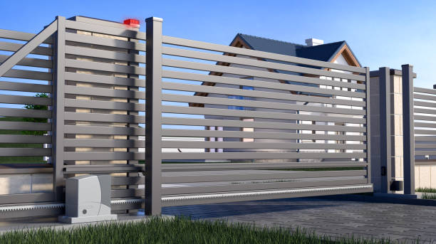

Discover the perfect blend of elegance and security with our driveway gates in Tacoma Washington . Our skilled team delivers quality installations, enhancing your property's curb appeal and safety.
Click Here To Call Us (877) 848-1711Enhance your property’s security and curb appeal in Tacoma Washington with custom driveway gates from Secure Driveway Gates. We are dedicated to providing homeowners in Tacoma Washington with high-quality, durable, and stylish gates that not only protect your home but also elevate its aesthetic value. Our driveway gates are designed to withstand the test of time, using the finest materials and craftsmanship to ensure they meet your security needs and complement your property’s architecture.
At Secure Driveway Gates, we understand that every property is unique. That’s why we offer a wide range of customizable options to suit your style and functional requirements. Whether you prefer a modern, sleek design or a classic, ornate look, our expert team will work with you to create a gate that reflects your personal taste and enhances your home’s overall appearance. Our gates are also equipped with advanced technology, including automatic openers, keyless entry systems, and robust security features, giving you peace of mind while adding convenience to your daily life.
Serving the Tacoma Washington area, Secure Driveway Gates is committed to excellence in every project we undertake. From the initial consultation to the final installation, we prioritize customer satisfaction and quality workmanship. Our reputation as the leading driveway gates provider in Tacoma Washington is built on years of delivering reliable and beautiful solutions to homeowners.
Don’t compromise on security or style. Contact Secure Driveway Gates today to discover how we can transform your property in Tacoma Washington with a driveway gate that offers both protection and beauty.
Residential & commercial Driveway Gates
Quality services at affordable prices
Immediate 24/ 7 emergency services


Choosing the right driveway gate for your property in Tacoma Washington can significantly enhance both security and curb appeal. At Secure Driveway Gates, we understand the importance of selecting a gate that aligns with your aesthetic preferences and functional needs.
Start by considering the style that best complements your home's architecture. Whether you prefer the classic elegance of wrought iron, the modern look of aluminum, or the rustic charm of wood, our extensive range of options ensures you’ll find a design that suits your property. Each material offers distinct advantages: wrought iron gates are durable and customizable, while aluminum gates are low-maintenance and resistant to rust. Wooden gates, on the other hand, provide a warm, traditional feel but require regular upkeep.
Functionality is another crucial factor. Automatic gates offer unparalleled convenience, allowing you to control access with the push of a button, which is ideal for high-traffic areas or added security. Manual gates, while requiring physical effort, can be a more cost-effective solution and are often chosen for their simplicity and reliability.
Additionally, think about the size and configuration of your driveway. Our team at Secure Driveway Gates will help you measure and select a gate that fits perfectly and operates smoothly within your space. We also provide options for added security features, including intercom systems and remote controls, to enhance your property’s safety.
Choosing the right driveway gate is an investment in your home’s security and aesthetics. Contact Secure Driveway Gates in Tacoma Washington today to explore our range of high-quality options and get expert guidance tailored to your needs.
Residential & commercial Driveway Gates
Quality services at affordable prices
Immediate 24/ 7 emergency services
Electric driveway gates offer unparalleled convenience and security, and our installation services are second to none . At Driveway Gates, we specialize in installing electric driveway gates that not only boost your home’s aesthetic but also enhance its security features. Our electric gates can be designed to work with various access control systems, ensuring you can manage your property’s entry effortlessly.
Our expert technicians assess your property and recommend the best electric gate solutions customized to your needs. We pride ourselves on our attention to detail during installation, ensuring every component works harmoniously for optimal functionality. Selecting us means you’re trusting skilled professionals who prioritize quality, efficiency, and customer satisfaction in every installation.

If your driveway gate has seen better days, it might be time for a replacement. Our driveway gate replacement services in Tacoma Washington ensure you receive a high-quality, stylish new gate that meets your needs. We offer a wide range of designs, materials, and automation features, allowing you to customize your new gate perfectly. Our experienced team will handle the removal of your old gate and the installation of the new one, ensuring a hassle-free process from start to finish. Trust us for dependable and stylish driveway gate replacements that elevate the security and look of your property.

Enhance the security of your property with our gate access control systems in Tacoma Washington . Access control systems offer significant benefits, including allowing you to control who can enter your premises. We provide a variety of options, from keypads to smartphone-enabled systems, ensuring you have the right solution for your property's unique requirements. Our knowledgeable technicians will guide you in selecting the best systems and handle the complete installation process. Choose our company for top-of-the-line gate access control solutions, and elevate your security effortlessly.

Looking for a robust solution to fortify your property? Our steel driveway gate installation services in Tacoma Washington offer exceptional strength and durability. Steel gates are perfect for creating a secure perimeter around your home or business while maintaining an elegant look. We custom fabricate steel gates to meet your specifications and aesthetic preferences, ensuring they fit perfectly with your property. Our team of professionals is dedicated to delivering quality installations and stand behind our work with excellent customer service. Choose steel for your driveway gate and enjoy both security and style.

A malfunctioning driveway gate operator can hinder security and convenience. Our driveway gate operator repair services in Tacoma Washington focus on restoring the functionality of your electric gates. Our technicians are experienced in diagnosing and fixing a range of operator issues, from electrical failures to mechanical blockages. We employ high-quality parts and proven techniques to ensure your gate operator works like new. We are dedicated to providing timely and effective service, allowing you to enjoy the convenience of automated access without interruption. For professional driveway gate operator repairs, choose us and experience the difference in service and support.
When searching for a trustworthy driveway gate company near you in Tacoma Washington look no further than Driveway Gates. We specialize in all aspects of driveway gate services, including installation, repair, and maintenance. Our local presence ensures that we understand the unique needs of our community and respond to them promptly. With a proven track record of excellent service and customer satisfaction, we are your go-to experts for everything related to driveway gates. Our dedicated team works closely with each client to understand their specific requirements, offering personalized solutions that ensure satisfaction. Choose us to experience a reputable and reliable driveway gate service tailored to your needs!

Automatic sliding gates can provide both security and ease of access, but when they malfunction, it can be a hassle. That’s where our automatic sliding gate repair services in Tacoma Washington come in. We specialize in diagnosing and fixing sliding gate problems promptly to restore the smooth operation you expect. Our experienced technicians understand the complexities of sliding gate mechanics, and we’re equipped to tackle any issue, big or small. Choose our services for reliable and efficient repairs that keep your automatic sliding gate working perfectly.
alooma24id

If your driveway gate isn’t opening or closing properly, the issue might lie with the gate operator. Our driveway gate operator repair services ensure that your gate operates with maximum efficiency. We offer comprehensive repairs for all types of gate operators, identifying issues swiftly and providing effective solutions. Our team is dedicated to transparency and communication, providing quotes up front and keeping you informed throughout the repair process. Trust us to restore your gate operator to its optimal performance; your satisfaction is our priority.
Years Experience
Expert Technicians
Satisfied Clients
Compleate Projects
When it comes to securing your property with elegance and reliability, Secure Driveway Gates in Tacoma Washington stands out as the trusted choice. We understand that your driveway gate is not just about enhancing curb appeal; it's about providing security and convenience. That’s why we offer a range of driveway gate solutions tailored to meet your specific needs, whether it's for residential or commercial purposes.
At Secure Driveway Gates, we pride ourselves on our commitment to quality and customer satisfaction. Our team of experienced professionals works with top-grade materials to ensure that every gate we install is not only durable but also a perfect blend of style and functionality. From sleek modern designs to classic wrought iron gates, we provide options that suit any architectural style and budget. Plus, our gates come equipped with the latest automation and security features, including smart access controls and sensors, making your experience seamless and secure.
We also offer comprehensive services beyond installation, including repair and maintenance, to keep your gate functioning at its best. Our dedicated support team in Tacoma Washington is always ready to provide timely assistance, ensuring that your driveway gate remains a reliable part of your home or business for years to come.
Choose Secure Driveway Gates in Tacoma Washington for unparalleled expertise, exceptional service, and driveway gates that are built to last. Experience the difference with a company that puts your security and satisfaction first. Contact us today for a free consultation and let’s secure your property the right way!
In today's world, ensuring your home’s security is of utmost importance. A residential driveway gate not only enhances the aesthetics of your property but also provides a robust barrier against unauthorized access. At our company, we specialize in driveway gate installation tailored to your specific needs. Our team of experienced professionals understands the significance of a well-constructed gate, ensuring durability, reliability, and an elegant finish. We utilize high-quality materials that withstand the test of time and the elements, ensuring your investment is protected. With various styles and designs ranging from classical to modern, we help you choose the perfect fit for your home. Our commitment to customer satisfaction and attention to detail makes us the number one choice for residential driveway gates .
In the heart of any thriving business lies a commitment to security and professionalism. Our commercial driveway gate installation services are designed to meet the unique demands of businesses . We understand that a secure entrance is paramount for safeguarding your assets and employees. Our gates combine functionality with style, creating an inviting yet secure entrance. We offer a variety of options including sliding gates, swing gates, and automated systems that ensure easy access for authorized personnel while keeping intruders at bay. Our team of experts assesses your needs and designs a system that integrates seamlessly with your existing security measures. When you choose us for your commercial driveway gate installation, you’re guaranteed quality workmanship, timely service, and unparalleled support.
Automatic driveway gates offer unparalleled convenience and security for homeowners and business owners alike. we at Driveway Gates specialize in the installation and repair of automatic driveway gates that enhance your property’s value and security. Our products are designed with advanced technology, providing you seamless access control. Whether you prefer a sliding, swinging, or bi-folding automatic gate, we have options that will suit your needs. Our professional installation ensures that your gate operates smoothly while complying with all safety regulations. We also offer long-term maintenance packages to keep your automatic gate in top condition. With us, you gain a trustworthy partner for all your automatic gate needs—let us help you upgrade your property today!
At Driveway Gates, we believe that every property deserves a unique touch. That's why we specialize in crafting custom driveway gates in Tacoma Washington . Our skilled craftsmen work closely with you to design a gate that reflects your style, security requirements, and budget. We offer a wide range of materials, finishes, and designs to choose from, whether you prefer the timeless elegance of wooden gates or the sleek look of metal gates. Our custom solutions ensure that your gate not only serves its practical purpose but also complements the architecture of your home or business. With meticulous attention to detail and a dedication to quality, we guarantee your custom driveway gate will stand the test of time.
Sliding driveway gates are an ideal choice for properties with limited space. At Driveway Gates, our experienced team specializes in sliding gate installation, ensuring that your new gate smoothly glides open and closed with ease. Our skilled technicians understand the mechanics of sliding gates and take care to select the right materials and components that ensure longevity and reliability.
Investing in a sliding driveway gate not only enhances your property’s security but also adds a touch of elegance. Our sliding gates can be customized to fit your style and budget, and our meticulous installation process ensures optimal functionality. We guarantee that your gate will operate smoothly and provide the security you need. Trust us to deliver high-quality service and exceptional results, making us the leading choice for sliding gate installations.
Is your driveway gate motor giving you trouble? At Driveway Gates, we offer specialized driveway gate motor repair services in Tacoma Washington . Our skilled technicians are trained to identify and resolve a variety of motor issues quickly and efficiently. Whether the motor is sluggish, making strange noises, or stops working altogether, we have the expertise to diagnose and repair the problem effectively. Our service is prompt, and we aim to minimize disruption to your routine. By using only high-quality parts, we ensure that your driveway gate runs smoothly for years to come. With our affordable pricing and dedication to quality service, you can count on us to restore your driveway gate motor to its optimal functionality!
A beautiful residential driveway gate not only adds value to your home but also enhances curb appeal and security. Our residential driveway gates are designed to meet the needs of modern homeowners. We offer a wide range of styles and materials, from elegant wooden gates to robust steel designs, ensuring you find the perfect match for your home. Our team specializes in consultation, offering expert advice to help you choose a gate that fits your aesthetic while providing top-notch security. With us, you’re not just getting a gate; you’re making a lasting investment in your home's value and safety.
Gate openers are the heart of your driveway gate system, and when they fail, it can leave your property vulnerable. Our gate opener repair services are here to ensure your gate operates smoothly once more. Our experienced technicians are adept at diagnosing a wide range of gate opener problems, from faulty wiring to motor issues.
At Driveway Gates, we pride ourselves on quick response times and effective repairs. We utilize the latest technology to troubleshoot issues and offer durable solutions that extend the life of your gate opener. With a focus on customer satisfaction, we ensure that every repair meets your expectations and enhances your property’s security. Expertise and reliability are the cornerstones of our services, making us the top choice for gate opener repairs.
Our commitment to providing affordable driveway gate repair services in Tacoma Washington does not come at the cost of quality. We understand that gate issues can arise unexpectedly, and our goal is to offer solutions that fit within your budget. Our expert team evaluates the problem thoroughly and presents transparent pricing with no hidden fees, ensuring you get the best service at a fair price. Our technicians are not only skilled at repairs but also great at identifying potential issues before they become costly problems. Choose our affordable driveway gate repair services, and prepare to be impressed with our quality and transparency.
In the heart of any thriving business lies a commitment to security and professionalism. Our commercial driveway gate installation services in Tacoma Washington are tailored to meet the unique demands of business owners looking to secure their properties effectively. We specialize in the installation of durable, high-security gate systems for commercial settings that provide both accessibility and safety.
Our team works closely with you to assess your security needs, offering a range of options from automated gates to access control systems. We take pride in our professionalism, ensuring that your installation is conducted efficiently and with minimal disruption to your business operations. By selecting us, you are choosing a trusted partner dedicated to enhancing your property’s security with expertise in commercial solutions.
For those seeking strength and elegance, iron driveway gates provide an unbeatable combination. Our iron driveway gate installation services in Tacoma Washington deliver security without sacrificing style. Our gates are designed to withstand harsh weather conditions and provide long-lasting protection for your property. With intricate designs available, your iron gate can be both functional and a statement piece for your entrance. Our skilled installers ensure precise fitting and finish, giving you peace of mind and an exquisite appearance. Trust our team for your iron driveway gate installation needs and make a lasting impression on visitors.
Wooden driveway gates are a timeless choice that adds warmth and appeal to any property. At Driveway Gates, we specialize in the installation of wooden driveway gates that not only enhance your home’s curb appeal but also provide robust security. Our experienced team can guide you through the selection of the right type of wood, design, and finish to ensure your gate complements your overall aesthetic.
Our wooden gates are crafted from high-quality materials, treated to resist weather conditions and ensure longevity. The installation process is meticulous, ensuring your gate operates seamlessly while providing both functionality and elegance. With a commitment to superior craftsmanship and customer satisfaction, we’ve established ourselves as the go-to team for wooden driveway gate installations .
If you are looking for strength combined with style, our iron driveway gate installation services in Tacoma Washington offer the perfect solution. Iron gates are not only robust but also add a sense of grandeur to your property. Our team specializes in custom iron gates, providing a variety of designs that can fit any entrance. We utilize high-quality materials to ensure your gate withstands the test of time while providing maximum security. Over the years, we have built a reputation for excellence, making us the preferred choice for iron driveway gate installation. Let us help you secure your property with style and durability.
When your driveway gate needs repairs, you want a local service that you can trust to respond quickly and effectively. At Driveway Gates, we offer reliable local gate repair services that prioritize your convenience and security. Our team of experienced technicians is familiar with the common issues that arise with various types of gates, ensuring prompt and efficient service. We serve both residential and commercial clients, making sure every repair is completed with precision and care. By choosing a local provider like us, you ensure fast response times and personalized service. Experience the benefits of our local expertise and let us take care of all your gate repair needs!
Regular maintenance is crucial to preserving the functionality and appearance of your driveway gate. At Driveway Gates, we provide comprehensive driveway gate maintenance services in Tacoma Washington . Our experienced team performs thorough inspections and servicing to identify potential issues before they escalate. We clean, lubricate, and adjust components to ensure smooth operation and enhance the lifespan of your gate. Our maintenance plans are tailored to your needs, allowing you to choose a schedule that works for you. By entrusting us with your driveway gate maintenance, you can enjoy peace of mind knowing that your property’s entryway remains secure and functional year-round.
Search for automatic gate repair near me ends with our expert services in Tacoma Washington . We understand the frustration that comes with a malfunctioning automatic gate. Our team specializes in the repair and servicing of automatic gates, ensuring that your entryway is secure and functional. Whether it’s a broken motor, faulty sensors, or wiring issues, we have the knowledge and tools to diagnose and fix the problem efficiently. With our commitment to prompt service and customer satisfaction, you can rest easy knowing help is just a phone call away. Choose us for your automatic gate repair needs and experience quality service close to home.
Searching for automatic gate repair solutions nearby? Our automatic gate repair services offer quick solutions to keep your gates functioning as they should. Our experienced technicians are equipped to handle a variety of brands and gate types, providing effective repairs and maintenance. We offer flexible scheduling to fit your busy life, and our reputation for reliability and quality service means you can have confidence in our work. When you need automatic gate repair, look no further than our dedicated team in your area.
Ensuring your driveway gate is compliant with local regulations is essential for avoiding legal issues and ensuring safe operation. In Tacoma Washington Secure Driveway Gates is committed to helping you navigate these requirements seamlessly.
First, it's crucial to research local zoning laws and building codes. Regulations can vary significantly between cities and states, and they often dictate aspects such as gate height, material, and installation methods. Our team at Secure Driveway Gates is well-versed in the local codes for Tacoma Washington and can guide you through the necessary steps to ensure compliance.
Next, consider any specific requirements for safety features. Many jurisdictions mandate certain safety measures, especially for automatic gates. This might include safety sensors to prevent accidents or proper signage to inform drivers and pedestrians of the gate’s operation. Our experts will help you incorporate these features into your design.
Permitting is another key factor. Before installation, you may need to obtain a permit from your local government. Secure Driveway Gates can assist you with the permit application process, ensuring that all required documents and approvals are in place before work begins.
Finally, regular inspections and maintenance are vital. Keeping your gate in good working order not only ensures compliance but also prolongs the lifespan of your investment. Our team offers comprehensive maintenance services to help you adhere to any ongoing requirements.
Choosing Secure Driveway Gates in Tacoma Washington means partnering with experts who understand local regulations and are dedicated to delivering compliant, high-quality solutions. Contact us today to get started and ensure your driveway gate meets all necessary standards.
Tacoma (/təˈkoʊmə/ tə-KOH-mə) is the county seat of Pierce County, Washington, United States. A port city, it is situated along Washington's Puget Sound, 32 miles (51 km) southwest of Seattle, 31 miles (50 km) northeast of the state capital, Olympia, and 58 miles (93 km) northwest of Mount Rainier National Park. The city's population was 219,346 at the time of the 2020 census. Tacoma is the second-largest city in the Puget Sound area and the third-largest in the state. Tacoma also serves as the center of business activity for the South Sound region, which has a population of about 1 million.
Yes, we offer same-day cleaning services in Tacoma Washington subject to availability. Contact Park Cleaning Services early to book your appointment.
Yes, Park Cleaning Services offers window and blind cleaning as part of our residential and commercial cleaning services in Tacoma Washington .
The length of a cleaning session in Tacoma Washington depends on the size of your property and the scope of the service, but most standard cleanings take a few hours.
Park Cleaning Services values your feedback! You can leave a review or contact us directly to share your experience with our cleaning services .
Park Cleaning Services covers all neighborhoods and surrounding areas in Tacoma Washington providing both residential and commercial cleaning services.
Yes, Park Cleaning Services offers specialized cleaning services for Airbnb and vacation rental properties ensuring your space is always guest-ready.
Our deep cleaning service includes a thorough cleaning of all surfaces, baseboards, hard-to-reach areas, and more detailed tasks that are not covered in regular cleanings.
Park Cleaning Services serves a wide range of businesses, including offices, retail stores, medical facilities, and more.
Park Cleaning Services is known for its attention to detail, eco-friendly products, flexible scheduling, and commitment to customer satisfaction.
Yes, Park Cleaning Services provides comprehensive commercial cleaning services ensuring your office or business is clean and welcoming.
Yes, Park Cleaning Services provides post-construction cleaning removing dust, debris, and making sure your space looks its best after a renovation.
Yes, Park Cleaning Services is fully insured in Tacoma Washington providing you peace of mind when we clean your home or business.
You can get a free, no-obligation quote by contacting Park Cleaning Services in Tacoma Washington through our website or by giving us a call.
Yes, Park Cleaning Services offers professional carpet cleaning services ensuring your carpets are fresh, clean, and free of allergens.
Our standard cleaning service includes dusting, vacuuming, mopping, bathroom and kitchen cleaning, and general tidying of all living spaces.
Yes, all cleaners at Park Cleaning Services are background-checked and undergo thorough training to provide top-quality service.
The cost of our cleaning services varies based on the size of your space and the type of service you require. Contact us for a free quote today.
Park Cleaning Services offers a wide range of cleaning services including residential cleaning, office cleaning, deep cleaning, move-in/move-out cleaning, and carpet cleaning.
Before our team arrives, we recommend picking up any personal items and clearing clutter to give our cleaners full access to your home or office in Tacoma Washington .
Absolutely! Park Cleaning Services offers customizable cleaning packages to meet your specific needs and preferences.
Yes, Park Cleaning Services allows you to customize your cleaning plan so you can prioritize certain areas or tasks.
Yes, Park Cleaning Services uses eco-friendly, non-toxic cleaning products that are safe for both your home and the environment.
The frequency of cleaning depends on your needs, but Park Cleaning Services in Tacoma Washington offers weekly, bi-weekly, and monthly cleaning options to keep your home spotless.
Yes, Park Cleaning Services offers move-in and move-out cleaning services in Tacoma Washington to ensure your property is clean and ready for the next occupant.
You can easily book a cleaning service with Park Cleaning Services in Tacoma Washington by visiting our website or giving us a call to schedule an appointment.
Yes, Park Cleaning Services offers flexible recurring cleaning schedules so you can enjoy a consistently clean home or office.
Yes, Park Cleaning Services provides one-time cleaning services perfect for special occasions, post-party cleanups, or seasonal deep cleaning.
To prepare for a cleaning service in Tacoma Washington we recommend tidying up personal items and securing any valuables. Our team will take care of the rest.
Yes, Park Cleaning Services provides all the necessary cleaning supplies and equipment for our services in Tacoma Washington .
We require a 24-hour notice for cancellations or rescheduling . Contact Park Cleaning Services if you need to make any changes.
I had a great experience with Secure Driveway Gates in Tacoma Washington . The team was professional, knowledgeable, and did an excellent job installing our driveway gate. The gate looks fantastic, and the whole process was smooth and hassle-free. I would definitely recommend Secure Driveway Gates to anyone in Tacoma Washington .
Profession
We had a great experience with Secure Driveway Gates in Tacoma Washington . The team was professional, knowledgeable, and provided a wide range of gate options. The installation was quick, and the finished product is beautiful and functional. We feel much safer now. Highly recommend them for any gate needs.
Profession
I am thrilled with my new driveway gate installed by Secure Driveway Gates in Tacoma Washington . The team was professional, prompt, and delivered exactly what I wanted. My home feels more secure, and the gate looks fantastic. Highly recommend them for top-quality driveway gate services in Tacoma Washington .
Profession